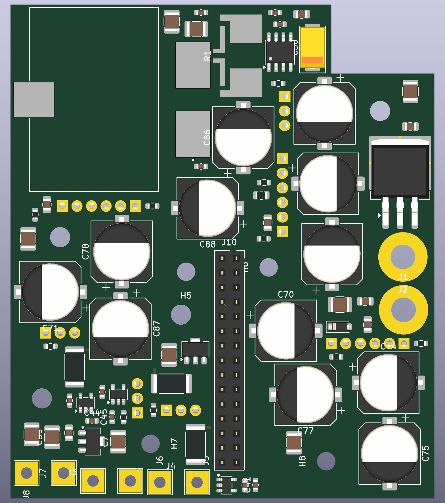
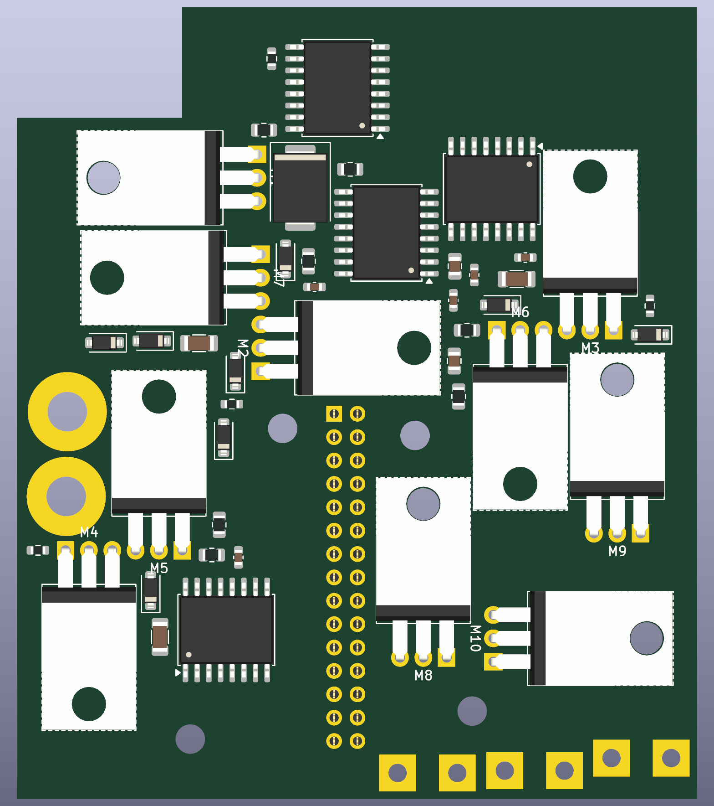
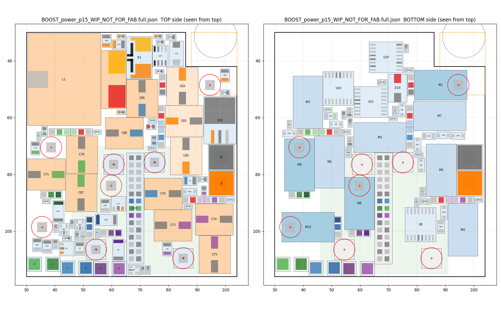

You accepted this placement as the base for copper on 2026-09-15, with changes. They are in the board below: gate resistors, pulldowns and turn-off diodes moved to their gate pins, the standoffs turned into board-to-case fixings with H8 pulled toward the unsupported corner, and the commutation loop added to the reported distances. No copper has been drawn and nothing shipped has been replaced.
0placement DRC errors, no exclusions
57/72agreed goals met (72 rows: the gate loops are new)
50/72brief targets met
1decision still open: the 4.0 mm tab-screw clearance
Decisions
Open
Tall parts 4.0 mm from a FET tab-screw centre
You asked which hardware this needs before deciding. The standard TO-220 shoulder washer is Aavid/Boyd 7721-7PPSG (40 % glass-filled PPS): shoulder Ø3.43 mm into the HYG180N10’s Ø3.60 mm tab hole, flange Ø5.46 mm, 1.02 mm thick, Ø2.95 mm bore — so a #4-40 or M2.5 screw, not M3.
The bushing never touches the top-side keep-out. Its flange sits under the board, between the gap spacer and the tab, and so does the ~3.3 mm spacer that fills the board-to-tab gap.
What the top side must clear is the screw head and the driver: M2.5 pan head Ø5.0 (2.5 mm radius), M3 Ø6.0 (3.0 mm), driver shaft 4–6 mm. All inside the existing 3.75 mm washer keep-out; 4.0 mm adds margin beside a 16.8 mm can.
5.5 mm is still not solvable. Making the standoffs case fixings changed nothing here, because the rules already counted them as screws. A polish at 5.5 mm with 17 parts free over 12 seeds still left 4.23 mm of intrusion, and about 180 global runs at 5.5 mm never produced a legal layout.
Yours to call: 4.0 mm with that hardware, or reject it and pull a bigger lever (fewer screw points, a wider LED-pad zone, or a re-place).
Accepted
Standoffs in their card quadrant, as board-to-case fixings
H5–H8 now carry the board to the case floor: male-female nylon standoff through the board into a tapped boss, with a ~5.6 mm insulating spacer under the board to clear the 5.57 mm FET gap.
H8 moved (75.1, 109.0) → (85.1, 109.5), the farthest legal point toward the bottom-right corner: that corner’s nearest fixing goes from 29.7 mm to 20.0 mm.
Corner to nearest fixing: top-left 41.4 mm, notch corner 10.7, bottom-right 20.0, bottom-left 18.3. No fifth fixing fits at the top-left — L1 covers x 30.3–65.1, y 30.3–62.8 and the nearest legal point is 53.6 mm from that corner. M3’s body sits under L1 on its 1 mm pad and carries the 60.7 g inductor there.
The 25 mm screw-distance rule is unchanged and met: the worst unscrewed FET is M4 at 22.6 mm.
Accepted
p15_b10_k1 as the base for copper
No global re-place was run, and the can-to-rail assignment is untouched, as you established it is optimal.
M2 → C70 (20.1 mm) and M3 → C87 (18.8 mm) cannot be improved. An exhaustive scan of every position on a 0.5 mm grid with four rotations found no legal spot closer than 20.0 mm for C70 — even with H6 free to move — or 18.6 mm for C87. C70 is boxed in by M5’s pin row and H6; C87 by C71 and C78.
Gate loops
New rule in the target list: the series gate resistor, the gate pulldown and the anti-parallel turn-off diode all within 5 mm of the gate pin. The small-part placer now works to an explicit order — per channel, the rail’s loop ceramic first, then the LX FET’s gate parts, then the rail FET’s.
Part
Role
Before
Now
R60
M7 series, 5 Ω
21.1 mm
5.2 mm
R76
M7 pulldown
16.4 mm
9.8 mm
D2
M7 turn-off diode
12.7 mm
2.6 mm
R70
M6 series, 5.1 Ω
22.8 mm
4.2 mm
D8
M6 turn-off diode
20.6 mm
3.0 mm
Of the 23 gate parts, 19 are now within 5 mm. Over: R75 5.3, R23 5.3 and R60 5.2 mm, all marginal, plus D13 at 9.7 mm — M4’s diode, the slowest edge of the six, in the tightest pocket. Every row is in the table below.
Commutation loop
Added to the reported distances as its own stage, measured M1 drain → LX FET drain → its source → the rail FET’s source → rail drain → nearest rail ceramic → GND → M1 source, straight-line pad to pad.
Channel
M1 drain → LX drain
Rail drain → loop ceramic
Loop total
ch1 — M7 / M2
10.9 mm
3.2 mm (C72)
38.0 mm
ch2 — M6 / M3
33.1 mm
5.3 mm (C3)
89.4 mm
ch3 — M5 / M4
41.9 mm
4.4 mm (C76)
90.6 mm
The M1-drain-to-LX-drain figures match yours exactly. My loop totals run about 8 mm longer than your ~29 / 82 / 82 because I measure the return straight from the ceramic’s GND pad to M1’s source pad. Prioritising the loop ceramics mattered: placing the gate parts first pushed C76 out to 23.8 mm and stretched ch3 to 116.6 mm.
Carried into routing, recorded in tools/replace_notes.md: In1 and In6 stay continuous under the entire LX and Vout path, with no splits and no single-via chokepoints; after routing, estimate the per-channel loop inductance and re-check ch3 against the simulation’s 4.85 / 12.74 / 7.91 nH and 68 V at the M1 die.
Battery cable
The run: fine
At board level the right-hand strip is blocked — U16 reaches x 103.7 of the 104 mm edge, and the lug bodies fill the rest.
Over U16 (4.8 mm tall) there is 21 mm of headroom to the lid, and 13 mm over the 12.8 mm input cans. Two 10 AWG conductors at about 5.5 mm each clear that comfortably.
So the cable comes up through the notch penetrator and runs south over U16 to the lugs, not at board level.
The terminations: a problem
J1 (Vin) and J2 (GND) pads are 9.2 mm apart, and a 10 AWG M4 ring terminal is about 10–12 mm across, so two opposite-polarity rings would overlap.
They cannot simply be spread: U16 blocks J2 above y 73.9 and C74 blocks J1 below about y 85.5, which caps the pitch near 11.6 mm.
Options: move U16 in a local polish to open the strip, or terminate differently (direct solder, or a stud block off-board).
Both sides

Top, KiCad render. L1 shows as an outline (its footprint has no 3D model). Grey circles are the four standoff holes.

Bottom, KiCad render, viewed from below (mirrored). Screwed FETs M1, M8, M9, M10 show a board hole through the tab; M2–M7 use the no-hole footprint.

Placement model, both sides seen from the top. Red circles: tab screws and standoffs. Green area: the 45 mm control card. Checked against KiCad: every pad in the distance table matches the saved board to 0.0000 mm.
Distances against the brief and the agreed goals
Straight-line pad-to-pad, measured on the saved board. “Brief” is REPLACE_BRIEF_v2.md; “goal” is what we agreed at check-in 3; “shipped” is today's board. Red edge: agreed goal missed.
kicad-cli pcb drc (KiCad 10.0.0) on the WIP board, using a copy of the shipped BOOST_power.kicad_pro rules, no exclusions.
0 errors. No courtyard, clearance, edge, keep-out or shorting violations.
45 silkscreen warnings. Reference text over pads or other text; cleared at routing, under the 1.0 / 0.15 mm silk rule.
270 unconnected items. Expected: there is no copper yet.
Mechanical checks (washer keep-outs, tool paths, screw distance, card, lug corner): 0 messages under decisions 1 and 2.
Warning
Count
silk_over_copper
24
silk_overlap
20
silk_edge_clearance
1
Also done this session
Schematic (ERC 0 / 0, netcheck 0 failures)
C30 → Vishay TR3D476K025C0250, your choice: 47 µF, case D, ESR ≤ 0.25 Ω (datasheet), LCSC/JLCPCB C4979367, 107 in stock. The planned TPSC226K025R0275 had 2 in stock.
C41 / C44 / C45 restored (you left it to me): 1 nF at the sink op-amp inputs on the power board. The IREF setpoints (25–131 mV) now cross the header and run past the power stage from a kilohm source, and nothing filters them there. They can be left unfitted at bring-up.
M2–M7 → no-hole TO-220 footprint (pads identical to TabUp).
Backups of every pre-edit state are in previous/2026-09-15/; the netlist diff shows only these changes.
Found and fixed
Shipped BOOST_power.kicad_pro. KiCad opened and closed the power project at 14:26 and rewrote the file without the Power/Gate/Rail netclasses. I restored it from git with your OK; the rewritten copy is in previous/2026-09-15/.
L1 land pattern checked against Codaca's CSCF3218 drawing: pad sizes and positions match. The terminals really do stick out past the body.
Pipeline: old-account paths, net-ties placed over a FET pin, and the small-part placer ignoring tool paths. All fixed and noted in tools/replace_notes.md.
Open items
decideJ1/J2 lug pitch: 9.2 mm against a 10–12 mm ring terminal for 10 AWG (see above).
checkD19: the value reads TVS_5KP54A, but the footprint is SMD D_SMC. As far as I know the 5KP series is an axial (P600) part. I haven't verified which part you intend.
checkMCP4451 resistance variant (schematic says -xxxx): with 1 nF, the IREF filter time constant runs from about 1.6 µs (5 kΩ) to about 27 µs (100 kΩ).
unverified C7/C55 height taken as 2.7 mm from Murata's part code; I couldn't open a datasheet page. It only decides whether they count as “tall” (over 3 mm).
Carried over: tab-screw spacer and insulating bushing hardware; LTspice BOOST.asc updates; who runs the remaining simulations.
Files
BOOST_split_boards/replace_2026-09-14/tools/placement/BOOST_power_p15_WIP_NOT_FOR_FAB.kicad_pcb (+ .kicad_pro, .distances.md, .drc.json, .top.svg, .bottom.svg)BOOST_split_boards/replace_2026-09-14/HANDOFF_SUMMARY_2026-09-15.md (§11 this session, §12 next steps)BOOST_split_boards/replace_2026-09-14/tools/replace_notes.md (every number and source)BOOST-github/BOOST/BOOST.kicad_sch · BOOST_9-15_nohole.net · ERC_9-15_nohole.rpt
Nothing in BOOST_split_boards/BOOST_power.kicad_pcb or BOOST_control.kicad_pcb has been replaced. No git commits were made.